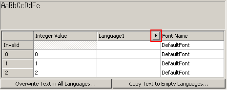
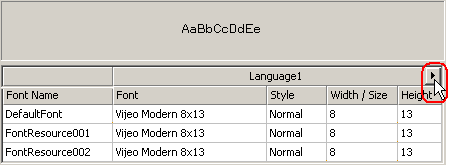
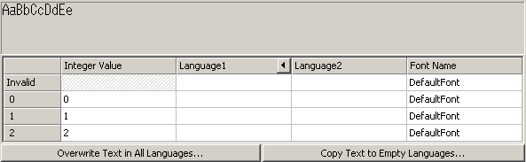
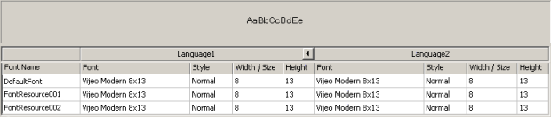

|
|
|
|
|
|
|
|
If your application is set up with multiple user languages, you can set up different font settings or different labels for each language.
After the application is set up with multiple user languages (see Section 20.2.6, Adding a User Application Language), display the Text Resource or Font Resource editor.
Text Resource

Font Resource

Click the arrow  to expand the resource editor to display all the languages. Define the text or font settings for each user language.
to expand the resource editor to display all the languages. Define the text or font settings for each user language.
Text Resource

Font Resource

Click the arrow again  to contract the resource editor to display text or font settings for the current language only.
to contract the resource editor to display text or font settings for the current language only.
For Text Resources only, click one of the following buttons:
Overwrite Text in All Languages to overwrite the text in all languages with the text strings in the current language. In the dialog box that opens, click Yes to confirm the operation. If you select one or more rows, all rows will be overwritten.
Copy Text to Empty Languages to copy the text from the current language to all empty languages. In the dialog box that opens, click Yes to confirm the operation. If you select one or more rows, all rows will be copied.